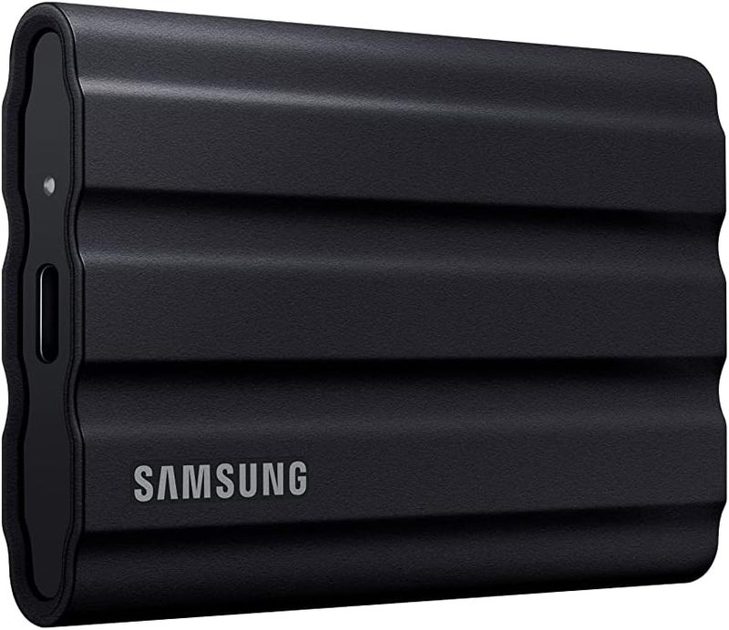
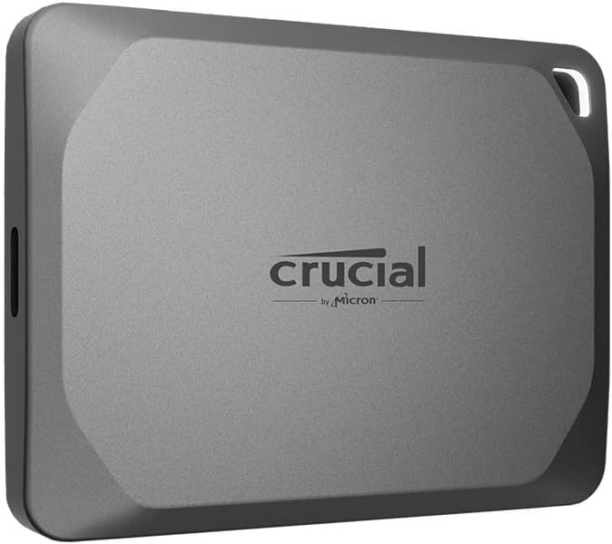
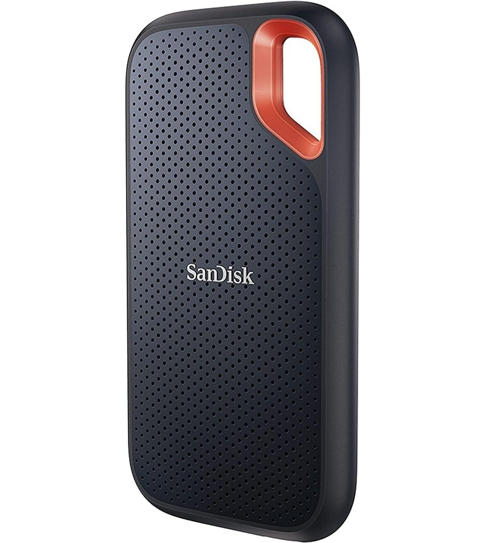

5 Best External SSDs for ProRes 4K Mobile Video Capture (2026)
Last updated: August 24, 2026 · Research-based guide · techpicksio.com
Buy the Samsung T7 Shield. The failure that actually ruins a ProRes shoot isn't a slow drive — it's a drive that heats up mid-take, throttles, and drops frames. The T7 Shield's ~1,000 MB/s sustained write and IP65 rubberized shell are built for exactly that scenario, and it's the drive to strap to a rig without thinking twice about it. Get the 2TB if you shoot ProRes more than occasionally — 4K ProRes eats a 1TB drive far faster than most creators expect, and running out mid-shoot costs more than the upgrade did.
How we pick: published manufacturer specifications and aggregated user reviews — not hands-on testing.

Samsung T7 Shield (1TB / 2TB)
The one to buy if a dropped or overheating drive would cost you the take. Get the 2TB and stop thinking about storage for a year.
- Sustained write
- ~1,000 MB/s
- Rugged rating
- IP65 water/dust
- Capacity
- 1TB / 2TB
Top Mobile ProRes SSDs Compared
| Drive Model | Rated Read/Write | Rugged Rating | Action |
|---|---|---|---|
| Samsung T7 Shield | 1,050 / 1,000 MB/s | IP65 water/dust | Check Live Price |
| Crucial X9 Pro | 1,050 / 1,050 MB/s | IP55 & dropproof | Check Live Price |
| SanDisk Extreme Portable | 1,050 / 1,000 MB/s | IP65 dust/water | Check Live Price |
Why Sustained Write Speed Matters for ProRes
4K ProRes is a high-bitrate format, so the limiting factor isn't peak burst speed but sustained write speed under heat. As a drive warms up during a long take, cheaper SSDs can throttle and drop frames. The drives below are grouped by the trade-off that matters most for a given shooter.
Detailed Breakdown
1. Samsung T7 Shield — best all-rounder
Quick take: Our pick — buy this one unless something below applies to you. Sustained write is the spec that matters here, not peak burst: a drive that throttles as it warms will drop frames twenty minutes into a take, and the T7 Shield's thermal management exists specifically to stop that. IP65 means a wet, dusty location day doesn't end your shoot.
To record 4K ProRes at 60fps reliably, a drive needs to hold a high continuous write speed without thermal drop-offs. The T7 Shield's dynamic thermal management and rugged elastomer shell are the two features most often cited in reviews as making it dependable for outdoor, long-take work.
👍 Why We Picked It
- ✅ Strong thermal performance over long takes
- ✅ Rugged shell rated for drops (per Samsung)
- ✅ Low power draw is easy on phone battery
👎 Where It Falls Short
- ❌ Larger footprint than minimalist micro-SSDs
- ❌ Rubber coating attracts pocket lint
Check Live Samsung T7 Shield Price on Amazon
2. Crucial X9 Pro — best for gimbal setups
Quick take: Buy this one if it's going on a gimbal. At ~38g and 2.5 x 2.0 inches, it's the only drive here that clamps to a balance-sensitive rig without upsetting your gimbal's calibration, and write speed matches the larger drives. Skip it if you shoot in weather: IP55 is a real step down from IP65, and it runs warm on long writes.

If you're mounting the drive on a gimbal or a lightweight rig where balance is delicate, the X9 Pro's compact size (~2.5 x 2.0 inches) and low weight (~38g) are its main advantage. It slips into standard cold-shoe SSD clamps easily.
👍 Why We Picked It
- ✅ Compact and lightweight for rig mounting
- ✅ Rated write speeds match larger drives
- ✅ Integrated lanyard loop
👎 Where It Falls Short
- ❌ Lower water-resistance rating than the T7 Shield
- ❌ Reported to run warm during long writes
Check Live Crucial X9 Pro Price on Amazon
3. SanDisk Extreme Portable — best brand trust
Quick take: Buy this if you'd rather own the known quantity. Speeds and the IP65 rating track the T7 Shield closely; what you're really paying for is years of long-term field reports instead of a newer drive's shorter record. Skip it if you shoot marathon takes — thermal throttling on sustained writes is the most consistent complaint against it, and that's the exact failure the T7 Shield engineered around.

The SanDisk Extreme Portable is one of the longest-running names in rugged portable storage, and that track record is its main advantage. IP65 water and dust resistance matches the T7 Shield, and read/write speeds are competitive. It's the safe pick if you trust the SanDisk ecosystem and want a drive with extensive long-term user feedback available.
👍 Why We Picked It
- ✅ Established brand with long track record
- ✅ IP65 water and dust resistance
- ✅ Carabiner loop for bag attachment
👎 Where It Falls Short
- ❌ Some users report thermal throttling on sustained long writes
- ❌ Included cable is short
Check Live SanDisk Extreme Price on Amazon
Frequently Asked Questions
Why do I need an external SSD to record ProRes?
4K ProRes is a very high-bitrate format that fills internal phone storage quickly, and on iPhone, ProRes at higher resolutions requires recording to external storage. An SSD gives you both the capacity and the sustained write speed the format needs.
What write speed do I need for 4K ProRes?
Sustained write speed matters more than peak burst speed. Drives rated around 1,000 MB/s, like the ones in this guide, have ample headroom. The failure mode to avoid is a cheaper drive that throttles as it heats up during a long take and drops frames.
Can I plug any USB-C SSD into my iPhone?
Most will connect — but connecting is not the bar. Power draw and sustained speed vary wildly, and a drive that throttles under heat will interrupt a recording even though it mounted fine. Don't gamble a shoot on an untested drive: buy one of the three here, or at minimum one with a published sustained-write figure.
Which SSD is best for mounting on a gimbal?
A compact, lightweight drive is easier to balance on a gimbal or lightweight rig. The Crucial X9 Pro is the smallest option in this guide at roughly 38g, which is why it's the pick for balance-sensitive setups.